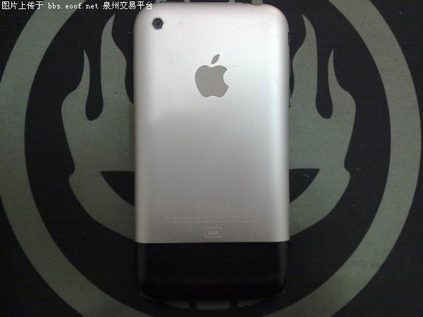

The iPhone1, announced by Apple CEO Steve Jobs on January 9, 2007, and launched in the U.S. on June 29, 2007, brings together innovative mobile phones, touchable widescreen iPods, and breakthrough Internet communications devices with desktop-grade email, web browsing, search, and mapping capabilities. The iPhone introduces a new user interface based on a large multi-touch display and leading-up new software that lets users control the iPhone with their fingers. The iPhone also ushered in a new era of cutting-edge features in mobile device software, redefining the capabilities of mobile phones. 